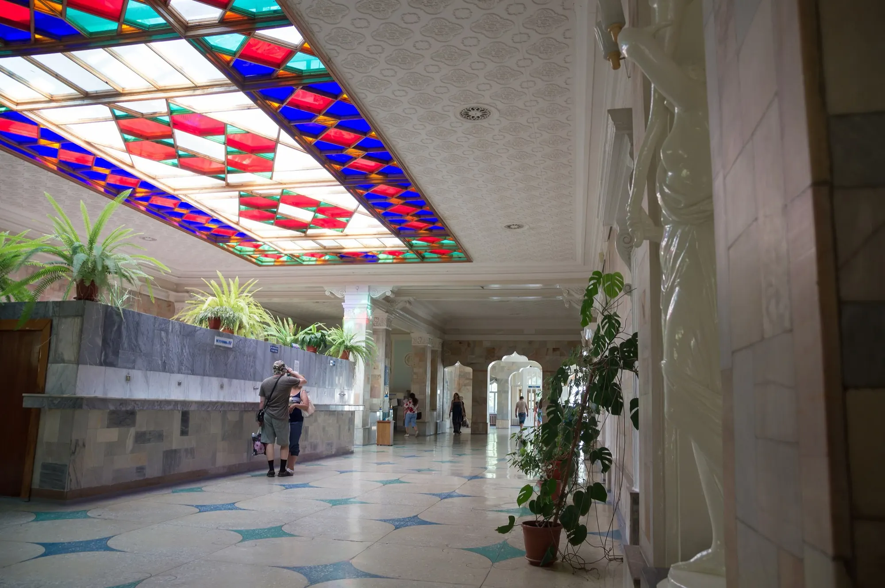
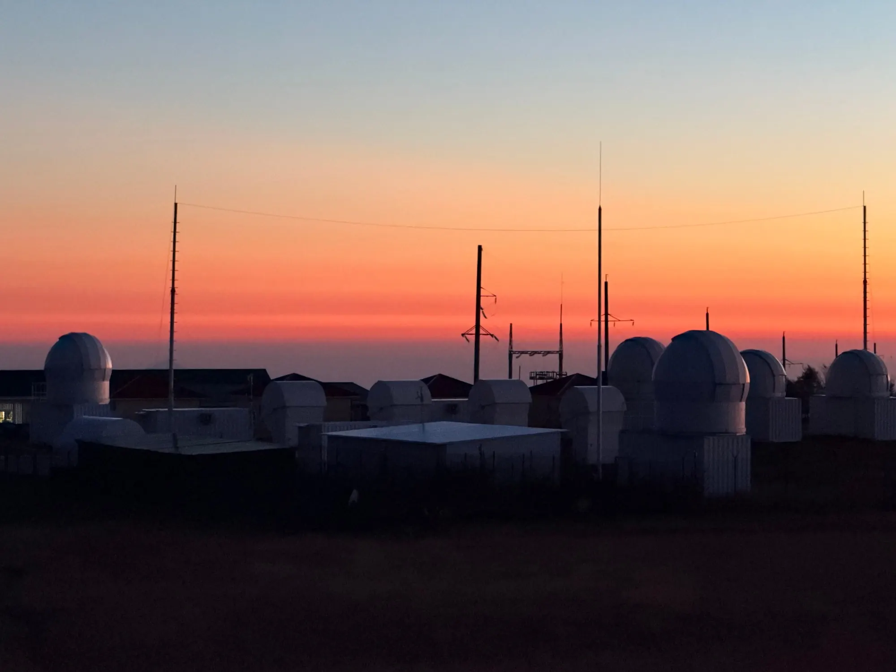
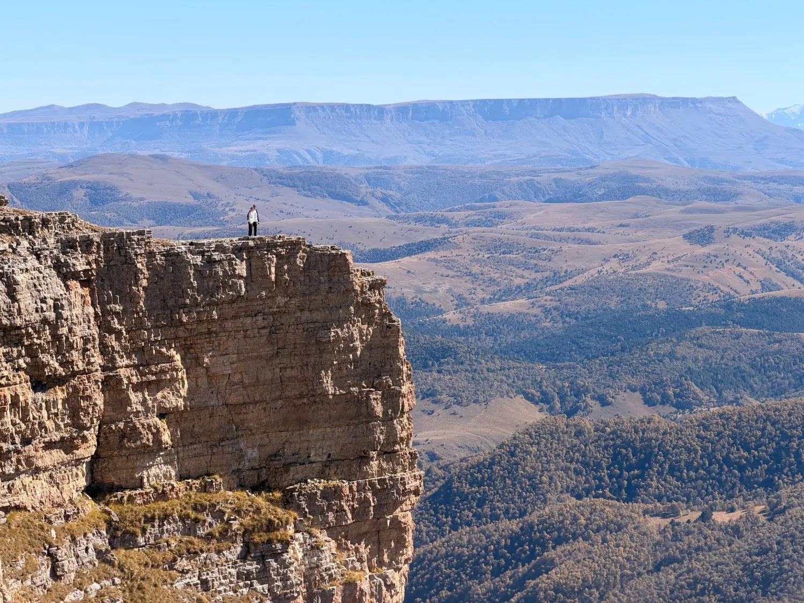
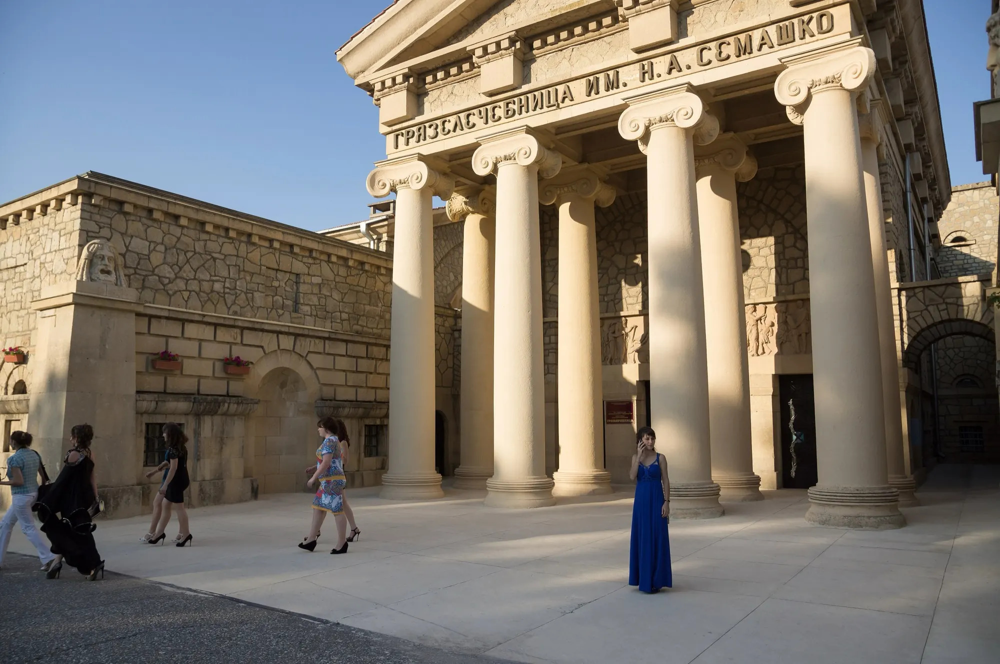
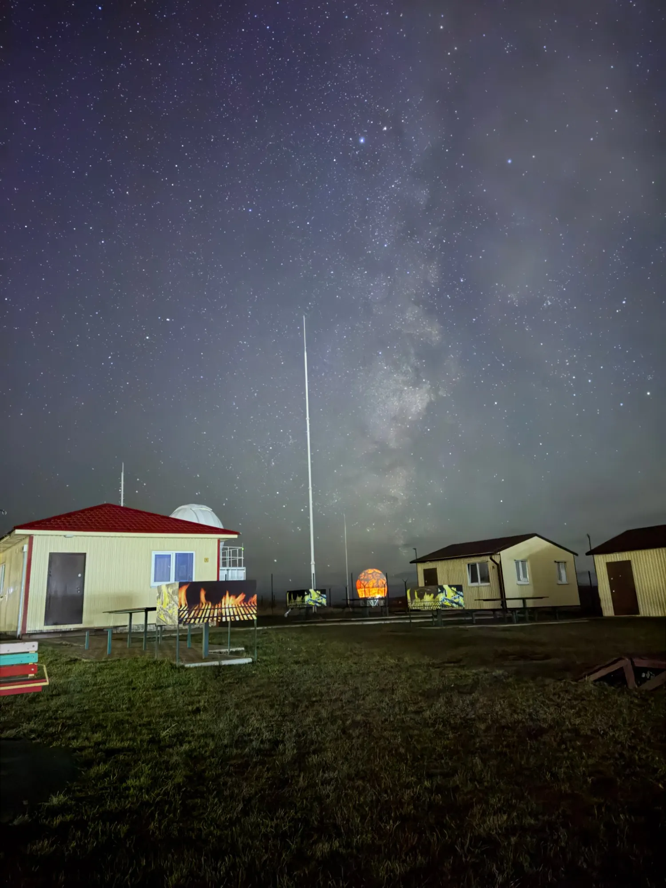
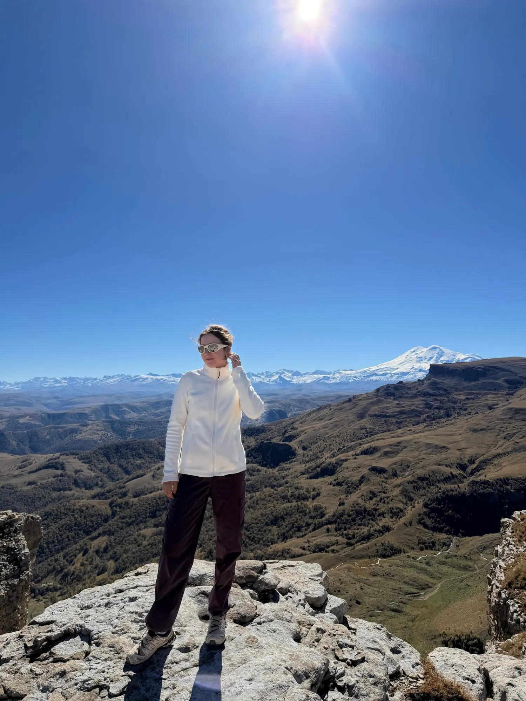
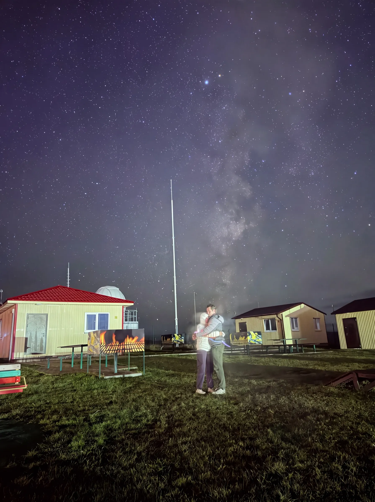

Начало недели
Воды
Каждый день выезжаем из Ессентуков в соседний город: Кисловодск, Пятигорск, Железноводск. Пьём воду прямо из источников, проходим тропу здоровья в Кисловодском парке и поднимаемся на Машук по канатной дороге.


photo/hero.webp, вертикальное для телефона от 1200×2000 px → photo/hero-mobile.webp.
Неделя на Кавказе: источники Минеральных Вод, ночь в обсерватории Роскосмоса и дорога к подножию Эльбруса.
Программа на неделю
Неделя делится на две части. До пятницы живём в Ессентуках и ездим по курортам Минеральных Вод. Потом поднимаемся выше, туда, где воздух чище и звёзд видно больше, чем в любом городе.
Начало недели
Каждый день выезжаем из Ессентуков в соседний город: Кисловодск, Пятигорск, Железноводск. Пьём воду прямо из источников, проходим тропу здоровья в Кисловодском парке и поднимаемся на Машук по канатной дороге.

Пятница — воскресенье
В пятницу переезжаем в обсерваторию Роскосмоса. Ночью смотрим в телескопы и слушаем лекции её сотрудников. Днём едем на Малый и Большой Бермамыт, останавливаемся на смотровых площадках и проезжаем дорогу до Джилы-Су.

За неделю у нас две базы. Первая — в Ессентуках, откуда до любого курорта Минеральных Вод меньше часа дороги. Вторая — у обсерватории, далеко от городов, где ночное небо не засвечено фонарями.

Отсюда каждый день выезжаем в Кисловодск, Пятигорск и Железноводск, а вечером возвращаемся и гуляем по Ессентукам.
Грязелечебница имени Семашко. Фото: Vyacheslav Argenberg, CC BY 4.0

Живём в домиках рядом с куполами телескопов. Выходишь вечером за дверь, а над головой Млечный Путь.
Эти места в литературе
«Воздух чист и свеж, как поцелуй ребёнка; солнце ярко, небо сине — чего бы, кажется, больше?»
«…а на краю горизонта тянется серебряная цепь снеговых вершин, начинаясь Казбеком и оканчиваясь двуглавым Эльбрусом».
«Кавказ подо мною. Один в вышине
Стою над снегами у края стремнины».

Кто ведёт группу
Я потомственная казачка, хотя выросла в Москве. На Кавказе у меня много родни, поэтому каждая поездка сюда для меня немного возвращение домой.
Я люблю путешествовать и всегда делилась впечатлениями с близкими. Теперь делюсь ими и с теми, кто едет со мной. В горах разница быстро стирается: к концу недели группа становится одной большой семьёй.
Написать Ольге
Ради этой ночи мы и поднимаемся так высоко. Здесь нет городской засветки, поэтому небо видно таким, каким его почти не видят в городе.
Закат
Встречаем его на плато, когда купола телескопов темнеют на фоне оранжевого неба.
Лекция
Сотрудники обсерватории Роскосмоса рассказывают о звёздах и о том, чем здесь занимаются.
Звёзды
Когда совсем темнеет, над домиками поднимается Млечный Путь. Смотрим на него до поздней ночи.
Стоимость
Входит в стоимость
Оплачивается отдельно
Прошедшие поездки
Каждая поездка длится неделю: прилёт в Минеральные Воды, дни на курортах и выходные в горах. Даты следующих поездок появятся здесь, а пока можно посмотреть, когда мы уже ездили и сколько это стоило.